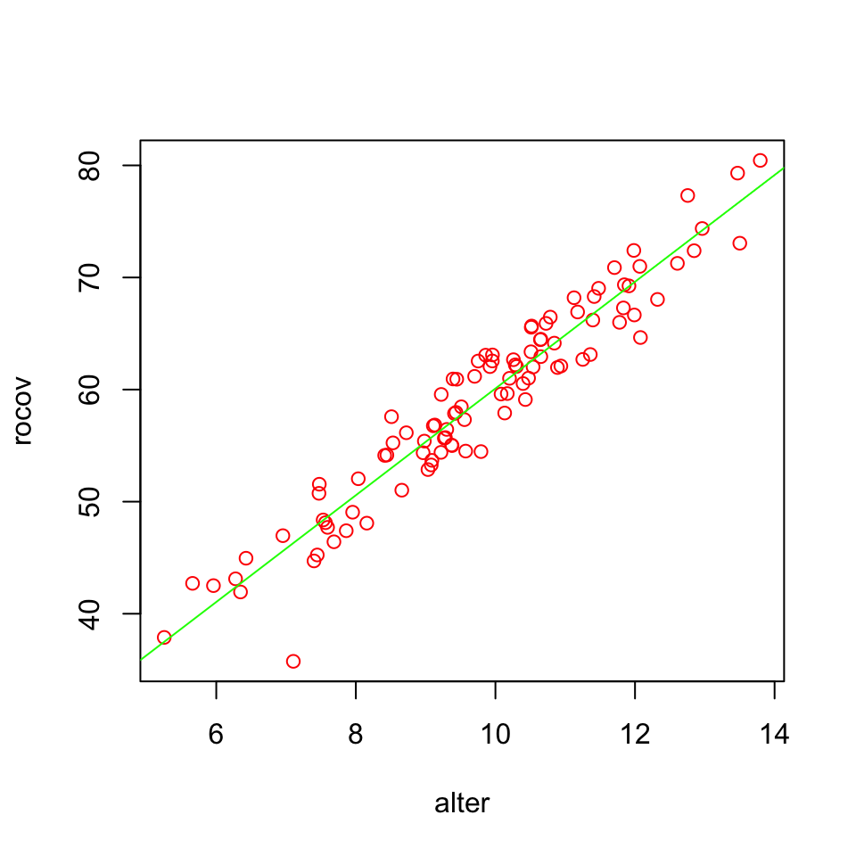

set.seed(1976)
## Set parameters for simulation
n = 100
mu = 10
sigma = 2
## Predictor
use.homeopathic.remedies = rnorm(n, mu, sigma)Mediation
Mediation

In statistics, a mediation model is one that seeks to identify and explain the mechanism or process that underlies an observed relationship between an independent variable and a dependent variable via the inclusion of a third hypothetical variable, known as a mediator variable (also a mediating variable, intermediary variable, or intervening variable).
Source: WIKIPEDIA
Example
Does the speed of recovery after sickness improve with the use of alternative medicine or is this effect mediated by a healthy lifestyle?
Mediaton paths

Simulate data
Create predictor variable
Mediator
Create mediator
b0 = 2
b1 = 1.2
error = rnorm(n,0,.7)
healthy.lifestyle = b0 + b1*use.homeopathic.remedies + errorSpecify model
Create outcome variable
b0 = 6
b1 = 1.2
b2 = 3
error = rnorm(n,0,1.4)
speed.of.healing = b0 + b1*use.homeopathic.remedies + b2*healthy.lifestyle + error
data <- data.frame(use.homeopathic.remedies,
healthy.lifestyle,
speed.of.healing)
data <- round(data, 4)The data
Apply 3 models
m.1.out.pre <- lm(speed.of.healing ~ use.homeopathic.remedies)
m.2.med.pre <- lm(healthy.lifestyle ~ use.homeopathic.remedies)
m.3.out.pre.med <- lm(speed.of.healing ~ use.homeopathic.remedies + healthy.lifestyle)Extract beta coëfficients
b.a = m.2.med.pre$coefficients[2]
b.b = m.3.out.pre.med$coefficients[3]
b.c = m.1.out.pre$coefficients[2]
b.c.accent = m.3.out.pre.med$coefficients[2]View beta coëfficients
b.ause.homeopathic.remedies
1.210308 b.bhealthy.lifestyle
2.859761 View beta coëfficients
b.cuse.homeopathic.remedies
4.762102 b.c.accentuse.homeopathic.remedies
1.30091 Visual
plot(data$use.homeopathic.remedies, data$speed.of.healing, col = 'red', xlab="alter", ylab="rocov")
fit.1 <- lm(speed.of.healing ~ use.homeopathic.remedies, data)
abline(fit.1, col = 'green')